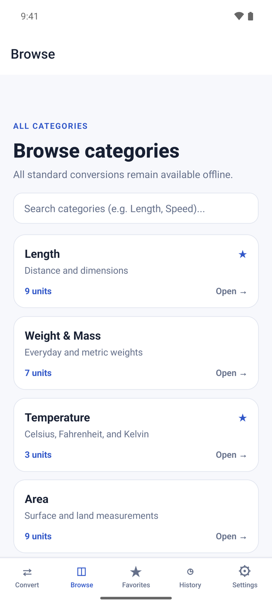

What it does
Unit Converter mengubah ukuran dari satu satuan ke satuan lain. Ketik angka, pilih dua satuan, dan hasilnya langsung muncul saat Anda mengetik. Aplikasi ini punya 15 kategori, mulai dari panjang, berat, dan suhu sampai takaran memasak, konsumsi bahan bakar, dan penyimpanan data.
- Konversi berjalan di perangkat Anda dan tidak butuh internet.
- Tanpa akun. Favorit dan riwayat Anda tetap tersimpan di ponsel.
- Mengubah cup dan sendok ke gram untuk 20 bahan yang umum dipakai. Hasilnya hanya perkiraan.
- Gratis dengan iklan banner kecil, hanya di Browse dan History. Sekali bayar untuk Premium menghilangkan iklan.
Get started
- Buka Unit Converter. Aplikasi langsung masuk ke Convert dengan kategori Length.
- Ketik angka di bawah VALUE. Jawabannya langsung tampil di bawah RESULT.
- Tidak ada izin yang perlu diberikan: aplikasi ini tidak memakai kamera, lokasi, atau file Anda.

Convert a value
- Di Convert, ketuk CATEGORY lalu pilih satu, misalnya Temperature.
- Ketuk FROM dan pilih satuan yang Anda punya. Ketuk TO dan pilih satuan yang Anda inginkan.
- Ketik angka di bawah VALUE. Gunakan titik atau koma untuk desimal, dan jangan pakai pemisah ribuan: ketik 1500, bukan 1,500.
- Baca jawabannya di bawah RESULT.
- Ketuk ⇄ untuk menukar kedua satuan, atau Clear untuk mengosongkan angka.

Copy a result
- Ketuk Copy result. Tombolnya berubah menjadi Copied.
- Tempel di aplikasi mana pun. Teks yang disalin memuat kedua sisi, misalnya "5 mi = 8.04672 km".
Setiap hasil yang Anda salin juga tersimpan di History.
Browse the categories
- Ketuk Browse untuk melihat semua 15 kategori beserta jumlah satuan di tiap kategori.
- Ketik di kotak pencarian untuk mencari kategori atau satuan berdasarkan nama atau simbolnya, misalnya "Speed" atau "mph".
- Ketuk sebuah kategori untuk membukanya di konverter.

Save your favorite categories
- Di Convert, pilih kategori lalu ketuk ☆ Save. Tombolnya berubah menjadi ★ Saved.
- Ketuk Favorites untuk melihat kategori yang Anda simpan.
- Ketuk Convert now → pada sebuah kartu untuk membuka kategori itu di konverter.
- Untuk menghapus favorit, ketuk ★ pada kartunya.

Reuse a past conversion
- Ketuk History. Daftarnya berisi hasil yang Anda salin, dari yang terbaru. Hanya 100 terbaru yang disimpan.
- Ketuk Open in converter untuk memuat kembali kategori, satuan, dan angka yang sama.
- Ketuk Copy untuk menyalin barisnya lagi.
- Untuk mengosongkan daftar, ketuk Clear all lalu Clear.

Change the theme
- Ketuk Settings.
- Di bawah Appearance, pilih System, Light, atau Dark. System mengikuti pengaturan ponsel Anda.

Change the language
- Ketuk Settings.
- Buka pengaturan bahasa lalu pilih bahasa. Pilihan pertama, System default, mengikuti bahasa ponsel Anda.
Nama kategori, satuan, dan bahan ikut berganti sesuai bahasa. Pencarian di Browse menemukan nama dalam bahasa Anda dan dalam bahasa Inggris.
Premium
Premium dibayar sekali saja, bukan langganan. Premium menghilangkan semua iklan dan tidak menambah apa pun lagi: semua kategori dan satuan gratis.
- Buka Settings dan ketuk Remove ads di bawah Premium. Tombolnya menampilkan harga.
- Jika Anda pernah membeli Premium, ketuk Restore purchase.
Questions
Apakah aplikasi ini bisa dipakai offline? Ya. Semua konversi berjalan di ponsel Anda. Hanya iklan dan pembelian Premium yang butuh internet.
Kenapa konversi saya tidak ada di History? History hanya menyimpan hasil yang Anda salin. Ketuk Copy result di Convert untuk menyimpannya.
Kenapa hasilnya menampilkan "Enter a valid number"? Angka yang Anda ketik berisi sesuatu yang tidak bisa dibaca sebagai angka, misalnya dua tanda desimal. Ketik angka dengan paling banyak satu titik atau koma.
Apakah bulan dan tahun dihitung secara tepat? Tidak. Di Time, bulan dan tahun memakai panjang kalender rata-rata, dan hasilnya menampilkan catatan saat Anda memakainya.
Bisakah aplikasi ini mengubah mata uang? Tidak. Aplikasi ini hanya mengubah satuan ukuran.
Privacy
Konversi berjalan di perangkat Anda, dan favorit serta riwayat tetap tersimpan di ponsel. Versi gratis menampilkan iklan banner dari Google AdMob. Baca kebijakan privasi selengkapnya.